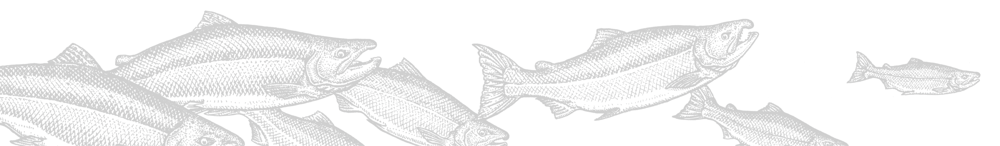

NOAA Fisheries’ Sea Stewards Handbook
is here to teach you what you need to know to help save the world, or at least the 70% of it that is covered in saltwater. In this handbook, you will discover:
The Alaska Seafood Marketing Institute
introduces you to more than great recipes. Meet the fishermen who bring this delicious resource to your table and the stewardship programs that help keep the fishery sustainable.
Learn more about the different salmon species and how Alaska’s 34,000-miles of coastline waters makes Alaska seafood the most sought-after flavors in the world.
The Nation’s Largest Temperate Rainforest
Tongass National Forest’s annual Salmon Factsheet offers a snapshot of our ecosystem that produces more wild salmon than all other national forests combined.
Ketchikan is located in the Nation’s largest temperate rainforest, receiving more than 200” of rainfall each year, which creates currents and helps flush nutrients and oxygen into our waters.
Meet SSRAA
Southern Southeast Regional Aquaculture Association, Inc. is a non-profit whose mission is to enhance and rehabilitate salmon production in southern Southeast Alaska to the optimum social economic benefit of salmon users. How do they do that? Learn more about their work.
Ketchikan Visitor Bureaus’ ‘A Fish Story’
No other town in Alaska boasts an Emmy Award-winning film series. Then, no other town in Alaska is quite like Ketchikan. The Ketchikan Story Project chronicles the life and times of Alaska’s First City – including this feature on our fishing community and their commitment to sustainability and quality that is unequaled around the world.
Hear the Story of Fog Woman
Discover Fog Woman’s role in the annual salmon return to Ketchikan Creek and surrounding waterways.